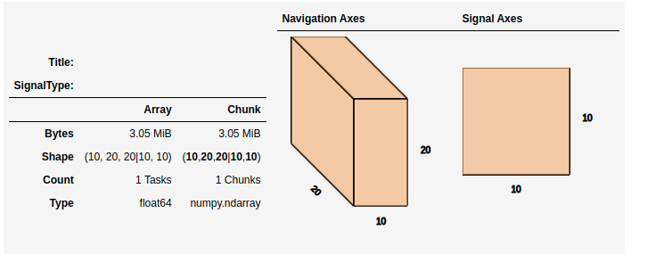

Working with big data#
Added in version 1.2.
HyperSpy makes it possible to analyse data larger than the available memory by
providing “lazy” versions of most of its signals and functions. In most cases
the syntax remains the same. This chapter describes how to work with data
larger than memory using the LazySignal class and
its derivatives.
Creating Lazy Signals#
Lazy Signals from external data#
If the data is large and not loaded by HyperSpy (for example a hdf5.Dataset
or similar), first wrap it in dask.array.Array as shown here and then pass it
as normal and call as_lazy():
>>> import h5py
>>> f = h5py.File("myfile.hdf5")
>>> data = f['/data/path']
Wrap the data in dask and chunk as appropriate
>>> import dask.array as da
>>> x = da.from_array(data, chunks=(1000, 100))
Create the lazy signal
>>> s = hs.signals.Signal1D(x).as_lazy()
Loading lazily#
To load the data lazily, pass the keyword lazy=True. As an example,
loading a 34.9 GB .blo file on a regular laptop might look like:
>>> s = hs.load("shish26.02-6.blo", lazy=True)
>>> s
<LazySignal2D, title: , dimensions: (400, 333|512, 512)>
>>> s.data
dask.array<array-e..., shape=(333, 400, 512, 512), dtype=uint8, chunksize=(20, 12, 512, 512)>
>>> print(s.data.dtype, s.data.nbytes / 1e9)
uint8 34.9175808
Change dtype to perform decomposition, etc.
>>> s.change_dtype("float")
>>> print(s.data.dtype, s.data.nbytes / 1e9)
float64 279.3406464
Loading the dataset in the original unsigned integer format would require around 35GB of memory. To store it in a floating-point format one would need almost 280GB of memory. However, with the lazy processing both of these steps are near-instantaneous and require very little computational resources.
Added in version 1.4: close_file()
Currently when loading an hdf5 file lazily the file remains open at
least while the signal exists. In order to close it explicitly, use the
close_file() method. Alternatively,
you could close it on calling compute()
by passing the keyword argument close_file=True e.g.:
>>> s = hs.load("file.hspy", lazy=True)
>>> ssum = s.sum(axis=0)
Close the file
>>> ssum.compute(close_file=True)
Lazy stacking#
Occasionally the full dataset consists of many smaller files. To combine them
into a one large LazySignal, we can stack them
lazily (both when loading or afterwards):
>>> siglist = hs.load("*.hdf5")
>>> s = hs.stack(siglist, lazy=True)
Or load lazily and stack afterwards:
>>> siglist = hs.load("*.hdf5", lazy=True)
Make a stack, no need to pass 'lazy', as signals are already lazy
>>> s = hs.stack(siglist)
Or do everything in one go:
>>> s = hs.load("*.hdf5", lazy=True, stack=True)
Casting signals as lazy#
To convert a regular HyperSpy signal to a lazy one such that any future
operations are only performed lazily, use the
as_lazy() method:
>>> s = hs.signals.Signal1D(np.arange(150.).reshape((3, 50)))
>>> s
<Signal1D, title: , dimensions: (3|50)>
>>> sl = s.as_lazy()
>>> sl
<LazySignal1D, title: , dimensions: (3|50)>
Machine learning#
Decomposition algorithms for machine learning often perform
large matrix manipulations, requiring significantly more memory than the data size.
To decompose datasets that are larger than available RAM, HyperSpy’s lazy
decomposition algorithms minimise memory use in one of two ways: by building a
deferred task graph (computation is expressed as a dask graph and only
executed when .compute() is called) or by streaming the data one
mini-batch at a time so that only a small portion resides in memory at once.
Which strategy is used depends on the algorithm and, for algorithm='SVD',
on the svd_solver parameter (see SVD (algorithm='SVD')).
decomposition() offers the following algorithms:
|
See |
|
|
|
|
|
|
|
|
custom object |
Any object with |
SVD (algorithm='SVD')#
The default algorithm='SVD' supports two actively maintained solvers,
selected via svd_solver:
|
Description |
|---|---|
|
|
|
|
Deprecated since version 2.5: svd_solver='full' is deprecated. Use 'randomized' instead,
which gives identical results for truncated SVD with substantially lower
memory usage.
Note
Choosing a solver.
svd_solver='randomized' is the right choice for nearly all datasets.
It is the fastest, works with any chunking layout, and its approximation
error is negligible for the top-k components (which is all that
truncated SVD preserves anyway).
svd_solver='incremental' exists for a specific niche: severely
memory-constrained environments where even the dask task-graph overhead
of 'randomized' exceeds available RAM. It streams data one chunk at
a time with near-zero steady-state memory, but runs substantially slower
because each chunk is processed serially. It is also deterministic
(unlike the randomised solver), which can be valuable for
reproducibility-sensitive workflows. Unless you are hitting RAM limits
with 'randomized', there is no reason to use 'incremental'.
Changed in version 2.5: The svd_solver parameter was introduced, offering two backends:
'randomized' (default, fastest — randomised truncated SVD) and
'incremental' (lowest steady-state memory, out-of-core streaming).
svd_solver='full' is available but deprecated; use 'randomized'
instead.
# Randomised SVD (default) — output_dimension required
>>> s.decomposition(algorithm="SVD", output_dimension=10) # doctest: +SKIP
>>> s.decomposition(algorithm="SVD", svd_solver="randomized",
... output_dimension=10) # doctest: +SKIP
# Incremental SVD — output_dimension required; supports masks and centring
>>> s.decomposition(algorithm="SVD", svd_solver="incremental",
... output_dimension=10) # doctest: +SKIP
# Full SVD — output_dimension optional; returns lazy dask arrays
>>> s.decomposition(algorithm="SVD", svd_solver="full") # doctest: +SKIP
>>> s.decomposition(algorithm="SVD", svd_solver="full",
... output_dimension=10) # doctest: +SKIP
# With navigation masking and mean-centring (all three solvers support centre)
>>> import numpy as np
>>> nav_mask = np.zeros(s.axes_manager.navigation_shape[::-1], dtype=bool)
>>> nav_mask[0] = True # exclude all pixels in the first navigation row
>>> s.decomposition(
... algorithm="SVD",
... svd_solver="incremental",
... output_dimension=10,
... centre="navigation",
... navigation_mask=nav_mask,
... reproject="navigation",
... ) # doctest: +SKIP
Array types stored in learning_results#
After decomposition() completes,
learning_results.factors and learning_results.loadings are either
numpy or dask arrays depending on the solver:
Algorithm / solver |
|
|
|---|---|---|
|
numpy (computed) |
numpy (computed) |
|
numpy (computed) |
numpy (computed) |
|
dask (lazy) |
dask (lazy) |
|
dask (lazy) |
numpy (computed) |
|
numpy (computed) |
dask (lazy) |
|
numpy (computed) |
numpy (computed) |
|
numpy (computed) |
numpy (computed) |
Fully lazy pipeline (svd_solver='full')#
svd_solver='full' keeps the entire pipeline lazy from decomposition
through to model reconstruction and saving — including when reproject is
used. decomposition() leaves factors and
loadings as dask arrays, and the reproject steps (when requested) are
performed with dask matmuls that stream over chunks without materialising the
full dataset. Only the array that is produced by a reproject step is
computed eagerly (it is typically small: nav × k for loadings or
sig × k for factors). The unrequested array stays lazy.
Calling get_decomposition_model() then returns
a LazySignal whose .data is a dask array.
No full-dataset materialisation occurs until .compute() or .save() is
called:
# Step 1 — decompose; factors and loadings remain lazy dask arrays
>>> s.decomposition(algorithm="SVD", svd_solver="full",
... output_dimension=3) # doctest: +SKIP
# Step 2 — build the model; model.data is still a lazy dask array
>>> model = s.get_decomposition_model() # doctest: +SKIP
>>> isinstance(model.data, da.Array) # True # doctest: +SKIP
# Step 3 — save triggers computation chunk by chunk while writing to disk
>>> model.save("model.hspy") # doctest: +SKIP
# Alternatively, select a subset of components (still lazy)
>>> model3 = s.get_decomposition_model(components=3) # doctest: +SKIP
>>> model3.save("model3.hspy") # doctest: +SKIP
# With reproject: reprojection itself is lazy too.
# Factors stay lazy (only loadings are computed by nav-reproject).
>>> s.decomposition(algorithm="SVD", svd_solver="full",
... output_dimension=3,
... reproject="navigation") # doctest: +SKIP
>>> model = s.get_decomposition_model() # still lazy # doctest: +SKIP
>>> model.save("model_reprojected.hspy") # doctest: +SKIP
By contrast, svd_solver='randomized' and svd_solver='incremental'
always compute numpy arrays during decomposition, so
get_decomposition_model() returns an eager signal by default.
Controlling laziness with the lazy_output keyword#
The general behaviour of the lazy_output keyword on
get_decomposition_model() is described in
Controlling laziness of reconstructed models.
For lazy signals, the key additional point is that svd_solver='full'
already stores factors and loadings as dask arrays, so lazy_output=None preserves
laziness automatically. Use lazy_output=True to force a lazy reconstruction after
an eager decomposition (for example with svd_solver='randomized'), or
lazy_output=False to materialise the model immediately:
>>> s.decomposition(algorithm="SVD", svd_solver="randomized",
... output_dimension=3)
>>> model = s.get_decomposition_model(lazy_output=True) # force lazy
>>> model.save("model.hspy") # streams chunk-by-chunk
>>> s.decomposition(algorithm="SVD", svd_solver="full")
>>> model = s.get_decomposition_model(lazy_output=False) # trigger computation now
Note
centre and normalize_poissonian_noise=True cannot be used together.
Attempting to do so will raise a ValueError.
The "PCA" algorithm wraps sklearn.decomposition.IncrementalPCA
and always centres the data internally (the centre keyword argument is
ignored for this algorithm — centering is handled by the estimator itself).
Like the "SVD" backends, it supports masks and all reproject modes.
Out-of-core NMF#
Added in version 2.5.
The "NMF" algorithm uses sklearn.decomposition.MiniBatchNMF
to perform non-negative matrix factorisation out-of-core. This requires
scikit-learn ≥ 1.1; on older versions the algorithm falls back to
in-memory sklearn.decomposition.NMF. output_dimension is
required.
>>> s.decomposition(algorithm="NMF", output_dimension=3)
Custom sklearn-like estimators#
Added in version 2.5.
Any custom sklearn-like estimator can be passed as the algorithm argument.
If the object implements partial_fit it is called incrementally on each
chunk (true out-of-core); otherwise fit or fit_transform is called
on the full dataset loaded into memory.
>>> from sklearn.decomposition import MiniBatchDictionaryLearning
>>> s.decomposition(
... algorithm=MiniBatchDictionaryLearning(n_components=5),
... output_dimension=5,
... )
Poissonian noise normalisation for lazy signals#
Added in version 2.5.
Lazy signals expose
normalize_poissonian_noise() as a
standalone method, independently of decomposition. It rescales the data
lazily using the same square-root variance-stabilising transform used
internally by decomposition(). This is
useful when you want to apply the normalisation yourself before running a
custom decomposition pipeline.
>>> s.normalize_poissonian_noise()
Note
Poissonian noise normalisation cannot be combined with the centre
parameter. Attempting to use both will raise a ValueError.
Note
Lazy signals with per-spectrum (sub-signal) chunking — where the on-disk chunk size along the signal axis is smaller than the full signal — are fully supported. HyperSpy rechunks the signal axis internally before processing, so all signal channels are read correctly regardless of the original chunk layout.
See also
decomposition() for more details on decomposition
with non-lazy signals.
GPU support#
Lazy data processing on GPUs requires explicitly transferring the data to the GPU.
On linux, it is recommended to use the dask_cuda library (not supported on windows) to manage the dask scheduler. As for CPU lazy processing, if the dask scheduler is not specified, the default scheduler will be used.
>>> from dask_cuda import LocalCUDACluster
>>> from dask.distributed import Client
>>> cluster = LocalCUDACluster()
>>> client = Client(cluster)
>>> import cupy as cp
>>> import dask.array as da
Create a dask array
>>> data = da.random.random(size=(20, 20, 100, 100))
>>> data
dask.array<random_sample, shape=(20, 20, 100, 100), dtype=float64, chunksize=(20, 20, 100, 100), chunktype=numpy.ndarray>
Convert the dask chunks from numpy array to cupy array
>>> data = data.map_blocks(cp.asarray)
>>> data
dask.array<random_sample, shape=(20, 20, 100, 100), dtype=float64, chunksize=(20, 20, 100, 100), chunktype=cupy.ndarray>
Create the signal
>>> s = hs.signals.Signal2D(data).as_lazy()
Note
See the dask blog on Richardson Lucy (RL) deconvolution for an example of lazy processing on GPUs using dask and cupy
Model fitting#
Most curve-fitting functionality will automatically work on models created from lazily loaded signals. HyperSpy extracts the relevant chunk from the signal and fits to that.
The linear 'lstsq' optimizer supports fitting the entire dataset in a vectorised manner
using dask.array.linalg.lstsq(). This can give potentially enormous performance benefits over fitting
with a nonlinear optimizer, but comes with the restrictions explained in the linear fitting section.
Practical tips#
Despite the limitations detailed below, most HyperSpy operations can be performed lazily. Important points are:
Chunking#
Data saved in the HDF5 format is typically divided into smaller chunks which can be loaded separately into memory,
allowing lazy loading. Chunk size can dramatically affect the speed of various HyperSpy algorithms, so chunk size is
worth careful consideration when saving a signal. HyperSpy’s default chunking sizes are probably not optimal
for a given data analysis technique. For more comprehensible documentation on chunking,
see the dask array chunks and best practices docs. The chunks saved into HDF5 will
match the dask array chunks in s.data.chunks when lazy loading.
Chunk shape should follow the axes order of the numpy shape (s.data.shape), not the hyperspy shape.
The following example shows how to chunk one of the two navigation dimensions into smaller chunks:
>>> import dask.array as da
>>> data = da.random.random((10, 200, 300))
>>> data.chunksize
(10, 200, 300)
>>> s = hs.signals.Signal1D(data).as_lazy()
Note the reversed order of navigation dimensions
>>> s
<LazySignal1D, title: , dimensions: (200, 10|300)>
Save data with chunking first hyperspy dimension (second array dimension)
>>> s.save('chunked_signal.zspy', chunks=(10, 100, 300))
>>> s2 = hs.load('chunked_signal.zspy', lazy=True)
>>> s2.data.chunksize
(10, 100, 300)
To get the chunk size of given axes, the get_chunk_size()
method can be used:
>>> import dask.array as da
>>> data = da.random.random((10, 200, 300))
>>> data.chunksize
(10, 200, 300)
>>> s = hs.signals.Signal1D(data).as_lazy()
>>> s.get_chunk_size() # All navigation axes
((10,), (200,))
>>> s.get_chunk_size(0) # The first navigation axis
((200,),)
Added in version 2.0.0.
Starting in version 2.0.0 HyperSpy does not automatically rechunk datasets as
this can lead to reduced performance. The rechunk or optimize keyword argument
can be set to True to let HyperSpy automatically change the chunking which
could potentially speed up operations.
Added in version 1.7.0.
For more recent versions of dask (dask>2021.11) when using hyperspy in a jupyter notebook a helpful html representation is available.
>>> import dask.array as da
>>> data = da.zeros((20, 20, 10, 10, 10))
>>> s = hs.signals.Signal2D(data).as_lazy()
>>> s

This helps to visualize the chunk structure and identify axes where the chunk spans the entire axis (bolded axes).
Computing lazy signals#
Upon saving lazy signals, the result of computations is stored on disk.
In order to store the lazy signal in memory (i.e. make it a normal HyperSpy
signal) it has a compute() method:
>>> s
<LazySignal2D, title: , dimensions: (10, 20, 20|10, 10)>
>>> s.compute()
[########################################] | 100% Completed | 0.1s
>>> s
<Signal2D, title: , dimensions: (10, 20, 20|10, 10)>
Lazy operations that affect the axes#
When using lazy signals the computation of the data is delayed until
requested. However, the changes to the axes properties are performed
when running a given function that modfies them i.e. they are not
performed lazily. This can lead to hard to debug issues when the result
of a given function that is computed lazily depends on the value of the
axes parameters that may have changed before the computation is requested.
Therefore, in order to avoid such issues, it is reccomended to explicitly
compute the result of all functions that are affected by the axes
parameters. This is the reason why e.g. the result of
shift1D() is not lazy.
Dask Scheduler#
Dask is a flexible library for parallel computing in Python. All of the lazy operations (and many of the non lazy operations) in hyperspy run through dask. Dask can be used to run computations on a single machine or scaled to a cluster. This section introduces the different schedulers and how to use them in HyperSpy - for more details, see the dask documention on scheduling.
Note
To scale on multiple machines, e.g. a computer cluster, the distributed scheduler is required.
Single Threaded Scheduler#
The single threaded scheduler in dask is useful for debugging and testing. It is not recommended for general use.
>>> import dask
>>> import hyperspy.api as hs
>>> import numpy as np
>>> import dask.array as da
Set the scheduler to single-threaded globally
>>> dask.config.set(scheduler='single-threaded')
Alternatively, you can set the scheduler to single-threaded for a single function call by
setting the scheduler keyword argument to 'single-threaded'.
Or for something like plotting you can set the scheduler to single-threaded for the
duration of the plotting call by using the with dask.config.set context manager.
>>> s.compute(scheduler="single-threaded")
>>> with dask.config.set(scheduler='single-threaded'):
... s.plot()
Single Machine Schedulers#
Dask has two schedulers available for single machines.
- Threaded Scheduler:
Fastest to set up but only provides parallelism through threads so only non python functions will be parallelized. This is good if you have largely numpy code and not too many cores.
- Processes Scheduler:
Each task (and all of the necessary dependencies) are shipped to different processes. As such it has a larger set up time. This preforms well for python dominated code.
>>> import dask
>>> dask.config.set(scheduler='processes')
Any hyperspy code will now use the multiprocessing scheduler
>>> s.compute()
Change to threaded Scheduler, overwrite default
>>> dask.config.set(scheduler='threads')
>>> s.compute()
Distributed Scheduler#
Warning
Distributed computing is not supported for all file formats.
Distributed computing is limited to a few file formats, see the list of
supported file format in
RosettaSciIO documentation. If the format you are using is not supported,
it is recommended to convert the file to zspy
by reading with a single machine scheduler and saving it as a zspy file.
The recommended way to use dask is with the distributed scheduler. This allows you to scale your computations
to a cluster of machines. The distributed scheduler can be used on a single machine as well. dask-distributed
also gives you access to the dask dashboard which allows you to monitor your computations.
Some operations such as the matrix decomposition algorithms in hyperspy don’t currently work with the distributed scheduler.
>>> from dask.distributed import Client
>>> from dask.distributed import LocalCluster
>>> import dask.array as da
>>> import hyperspy.api as hs
>>> cluster = LocalCluster()
>>> client = Client(cluster)
>>> client
Any calculation will now use the distributed scheduler
>>> s
>>> s.plot()
>>> s.compute()
Running computation on remote cluster can be done easily using dask_jobqueue
>>> from dask_jobqueue import SLURMCluster
>>> from dask.distributed import Client
>>> cluster = SLURMCluster(cores=48,
... memory='120Gb',
... walltime="01:00:00",
... queue='research')
Get 3 nodes
>>> cluster.scale(jobs=3)
>>> client = Client(cluster)
>>> client
Any calculation will now use the distributed scheduler
>>> s = hs.data.two_gaussians()
>>> repeated_data = da.repeat(da.array(s.data[np.newaxis, :]),10, axis=0)
>>> s = hs.signals.Signal1D(repeated_data).as_lazy()
>>> summed = s.map(np.sum, inplace=False)
>>> s.compute()
Limitations#
Most operations can be performed lazily. However, lazy operations come with a few limitations and constraints that we detail below.
Immutable signals#
An important limitation when using LazySignal is the inability to modify
existing data (immutability). This is a logical consequence of the DAG (tree
structure, explained in Behind the scenes – technical details), where a complete history of the
processing has to be stored to traverse later.
In fact, lazy evaluation removes the need for such operation, since only additional tree branches are added, requiring very little resources. In practical terms the following fails with lazy signals:
>>> s = hs.signals.BaseSignal([0]).as_lazy()
>>> s += 1
Traceback (most recent call last):
File "<ipython-input-6-1bd1db4187be>", line 1, in <module>
s += 1
File "<string>", line 2, in __iadd__
File "/home/fjd29/Python/hyperspy3/hyperspy/signal.py", line 1591, in _binary_operator_ruler
getattr(self.data, op_name)(other)
AttributeError: 'Array' object has no attribute '__iadd__'
However, when operating lazily there is no clear benefit to using in-place operations. So, the operation above could be rewritten as follows:
>>> s = hs.signals.BaseSignal([0]).as_lazy()
>>> s = s + 1
Or even better:
>>> s = hs.signals.BaseSignal([0]).as_lazy()
>>> s1 = s + 1
Other minor differences#
Histograms for a
LazySignaldo not supportknuthandblocksbinning algorithms.CircleROI sets the elements outside the ROI to
np.naninstead of using a masked array, becausedaskdoes not support masking. As a convenience,nansum,nanmeanand othernan*signal methods were added to mimic the workflow as closely as possible.
Saving Big Data#
The most efficient format supported by RosettaSciIO to write data is the ZSpy format, mainly because it supports writing concurrently from multiple threads or processes. This also allows for smooth interaction with dask-distributed for efficient scaling.
Behind the scenes – technical details#
Standard HyperSpy signals load the data into memory for fast access and processing. While this behaviour gives good performance in terms of speed, it obviously requires at least as much computer memory as the dataset, and often twice that to store the results of subsequent computations. This can become a significant problem when processing very large datasets on consumer-oriented hardware.
HyperSpy offers a solution for this problem by including
LazySignal and its derivatives. The main idea of
these classes is to perform any operation (as the name suggests)
lazily (delaying the
execution until the result is requested (e.g. saved, plotted)) and in a
blocked fashion. This is
achieved by building a “history tree” (formally called a Directed Acyclic Graph
(DAG)) of the computations, where the original data is at the root, and any
further operations branch from it. Only when a certain branch result is
requested, the way to the root is found and evaluated in the correct sequence
on the correct blocks.
The “magic” is performed by (for the sake of simplicity) storing the data not
as numpy.ndarray, but dask.array.Array (see the
dask documentation). dask
offers a couple of advantages:
Arbitrary-sized data processing is possible. By only loading a couple of chunks at a time, theoretically any signal can be processed, albeit slower. In practice, this may be limited: (i) some operations may require certain chunking pattern, which may still saturate memory; (ii) many chunks should fit into the computer memory comfortably at the same time.
Loading only the required data. If a certain part (chunk) of the data is not required for the final result, it will not be loaded at all, saving time and resources.
Able to extend to a distributed computing environment (clusters). :
dask.distributed(see the dask documentation) offers a straightforward way to expand the effective memory for computations to that of a cluster, which allows performing the operations significantly faster than on a single machine.